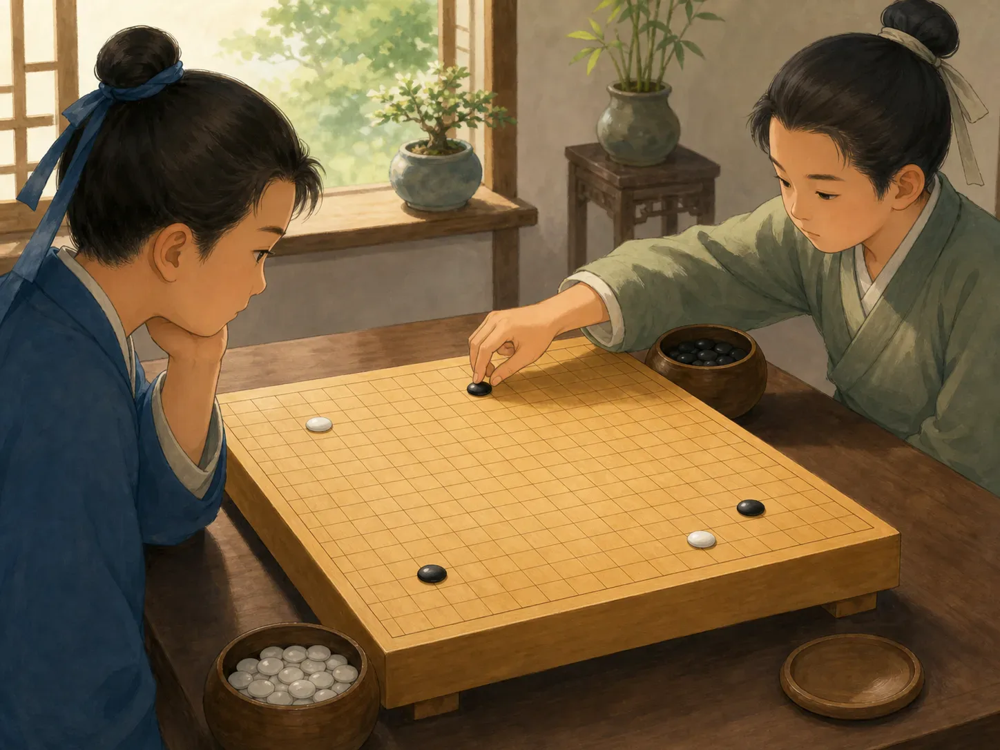
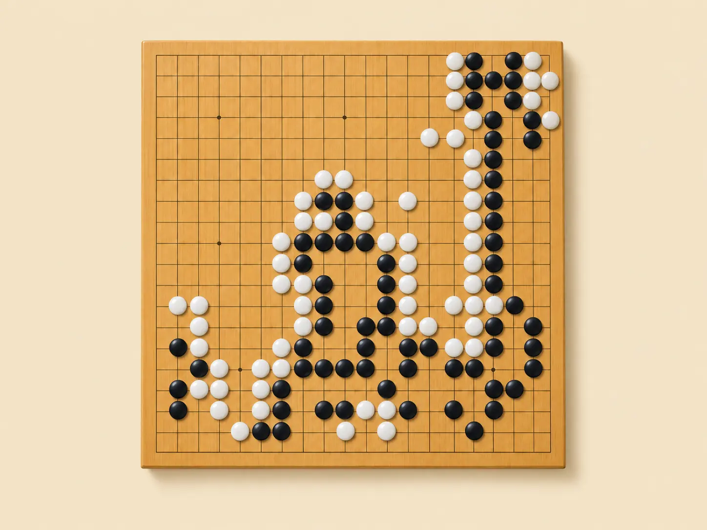

围棋：黑白棋子里的一整个世界
Weiqi: A Whole World in Black and White
Page 1
能有多难呢？
How Hard Could That Be?

A black stone lands, and the other player thinks for a moment before placing a white one.
一颗黑子落在木棋盘上。对面的人想了一会儿，放下一颗白子。第一次看wéiqí · 双方轮流在棋盘交叉点放置黑白棋子的棋类游戏。，你可能会觉得奇怪：这到底有什么难的？没有骰子，棋子也不会在棋盘上跑来跑去。一颗棋放下以后，通常就待在那里不动了。
能有多难呢？答案是：非常难。
围棋在中国已经流传了几千年。两个人轮流把黑白棋子放在棋盘的交叉点上。如果把对方的一群棋完全围住，就可以把它们提掉；同时，双方还要想办法围出自己的地盘。
规则并不难。真正奇怪的是，棋一下起来，事情马上就复杂了。
A black stone lands on the wooden board. Across the table, the other player thinks for a moment and places down a white one. If you are watching wéiqí · 围棋 · The strategy game in which two players place black and white stones on a grid. for the first time, you may wonder why it is supposed to be difficult. Nobody rolls dice. The stones do not run around the board. Once you put one down, it usually stays exactly where it is.
How hard could that be? Very hard, as it turns out.
weiqi began in China thousands of years ago. Two players take turns placing black and white stones on the intersections of a grid. If you completely surround an opponent’s stones, you can capture them. Players also try to surround empty areas as territory.
The rules are simple enough to learn quickly. The strange part is what happens after that.
Page 2
为什么去那里？
Why Over There?

Stones crowd some parts of the board while large areas remain empty; every move may matter far away.
比如，你看见一颗白棋靠近自己的黑棋，心想：“我要抓住它！”于是你追着它下一步，又下一步。可是对方忽然跑到棋盘另一边去了。为什么去那里？过了一会儿你才发现：你忙着赢眼前这一场小仗的时候，对方已经在远处悄悄占了一大片地方。
这就是围棋最有意思的地方之一。一颗棋虽然只占一个小点，却可能影响很远。有时候，几颗棋根本不值得救；有时候，棋盘上空空的地方，反而比最热闹的地方重要。
Imagine you see a white stone near yours and decide to capture it. You add another black stone. White answers. You keep chasing—and suddenly your opponent plays far away on the other side of the board. Why over there? Later, you discover the answer. While you were busy winning one tiny fight, your opponent was building something much bigger somewhere else.
That is one of the great tricks of weiqi. A move in one corner may matter far away. Sometimes a few stones are not worth saving. Sometimes an empty part of the board is more important than the crowded part everyone is staring at.
Page 3
每一个空点，都是一种可能
Every Empty Place Is a Possibility
标准围棋棋盘一共有361个交叉点。刚开局时，几乎全是空的。
可是“空”并不等于“什么都没有”。每一个空点，都是一种可能。
A standard board has 361 intersections. At the beginning, almost all of them are empty.
But empty does not mean unimportant. Every empty place is a possibility.
Page 4
第37手
Move 37
2016年，这件事出现了一个特别有名的例子。人工智能程序 AlphaGo 和世界顶尖棋手李世石进行五盘比赛。第二盘下到第37手时，AlphaGo 把一颗棋放在了一个很出人意料的位置。
许多职业棋手第一眼都觉得奇怪。这不像人类高手通常会下的位置，有人甚至怀疑电脑是不是算错了。结果它没有错。
又过了很多步，人们才看出那颗棋的重要作用。AlphaGo 赢下了这一盘，最后又以四比一赢得整场比赛。
人类已经研究围棋几千年了，可一颗小小的棋子，还是能让高手停下来问：“为什么偏偏下在这里？”
In 2016, that idea became famous in a very surprising way. An artificial-intelligence program called AlphaGo played a five-game match against Lee Sedol, one of the world’s strongest professional players. During the second game, AlphaGo made its 37th move in a place that surprised professional commentators.
It did not look like the kind of move a top human player would normally choose. At first, some wondered whether the computer had made a mistake. It had not.
Much later, the unusual move turned out to be important. AlphaGo won the game and eventually won the match four games to one.
People had been studying weiqi for thousands of years, and one little stone could still make experts ask, “Why there?”
整张棋盘最后可能变成什么样子
What the Whole Board Might Become
也许，这就是围棋最特别的地方。下棋时，你看的从来不只是眼前这一颗棋。
你是在想象，整张棋盘最后可能变成什么样子。而棋盘上最重要的地方，有时候还一颗棋都没有。
That may be the best way to understand the game. You are never looking only at the stone in front of you.
You are trying to imagine what the whole board might become. And sometimes the most important place on the board is still completely empty.